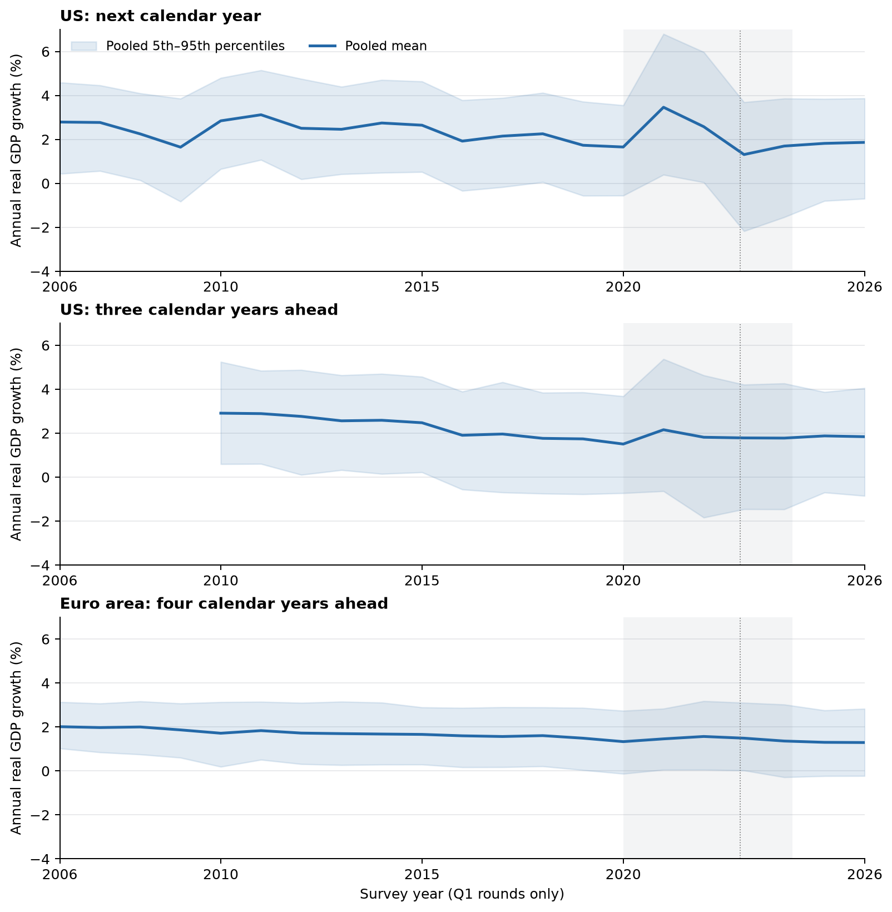
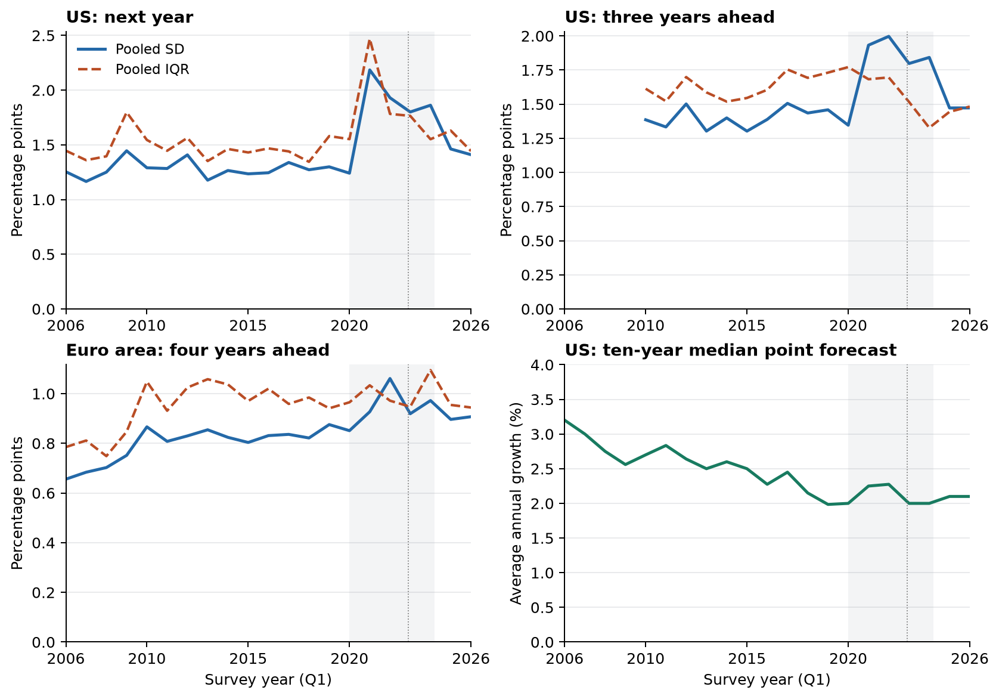
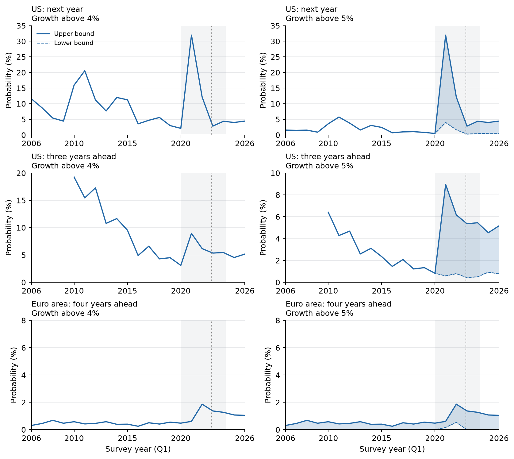

Survey evidence · US and euro area · through 2026Q3
Growth expectations in the AI era
Professional GDP forecasts show little shift toward faster growth or much greater uncertainty. Their upper tails help reveal how much room remains for unusually rapid growth.
The evidence concerns the overall growth outlook. These surveys do not ask respondents to attribute their forecasts to AI. A comparison with AI scenarios must match the economy, outcome, horizon and assumptions.
Compare the outlook before and after COVID
Each cell shows the earlier period → 2025–26. The default uses Q1 surveys at a fixed calendar horizon. Change the baseline, survey rounds or growth threshold to inspect sensitivity.
A probability range is the lower and upper bound allowed by the reported bins. It is not a confidence interval. For example, a survey bin covering all growth above 4% cannot distinguish 5% growth from 10% growth. We never impose a zero probability by closing that open tail.
Forecast levels and uncertainty over time


What remains in the upper tail?

What these forecasts tell us about AI
Stable medians alone could coexist with a small chance of a boom. The combination of central forecasts, reconstructed distribution widths and directly bounded upper-tail probabilities is more informative. It limits the reported probability of fast growth within the surveyed horizons. Small open-tail probability does not bound how large growth could be in that tail. These results also do not identify beliefs about AI arriving after those horizons, offsetting economic forces, or the reasons for a respondent’s forecast.
The US density horizon reaches three calendar years ahead. The ECB’s longer-term question reaches four years ahead in Q1/Q2 and five years ahead in Q3/Q4. Neither supplies a ten-year GDP density. AI scenarios conditional on advanced AI arriving, global outcomes and changes in GDP levels cannot be compared directly with these unconditional regional growth probabilities. The paper audits those comparisons and does not claim an established, matched disagreement between two populations.
Data and methods
Respondents receive equal weight within each round. Invalid probabilities are excluded and retained histograms are normalized. Moments, quantiles and CRPS use a uniform distribution within each finite bin; open tails are closed at one adjacent-bin width for those reconstructed statistics. High-growth probability bounds use the literal open bins instead. All-round period summaries average within year before averaging across years. The underlying panel can change between rounds.
Annual ECB GDP outcomes use the ECB's published annual growth rate; annual inflation uses the official annual-average index-growth series. Realizations are current or archived latest-vintage snapshots, not a real-time evaluation. The paper documents acquisition dates and score aggregation.